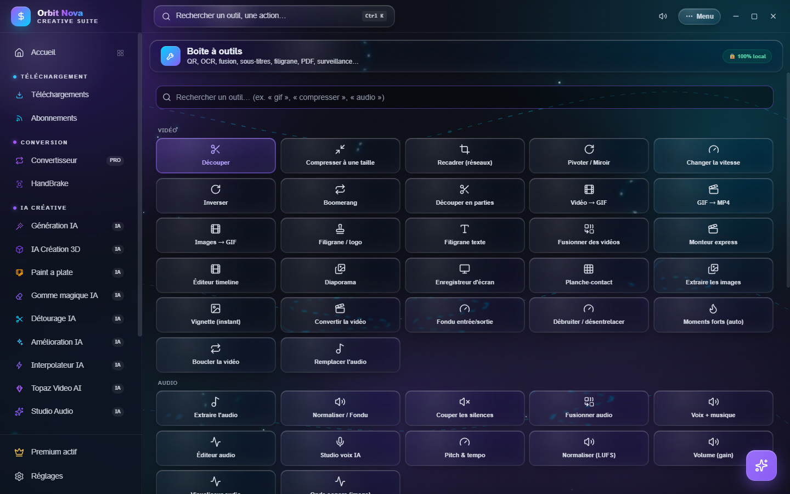
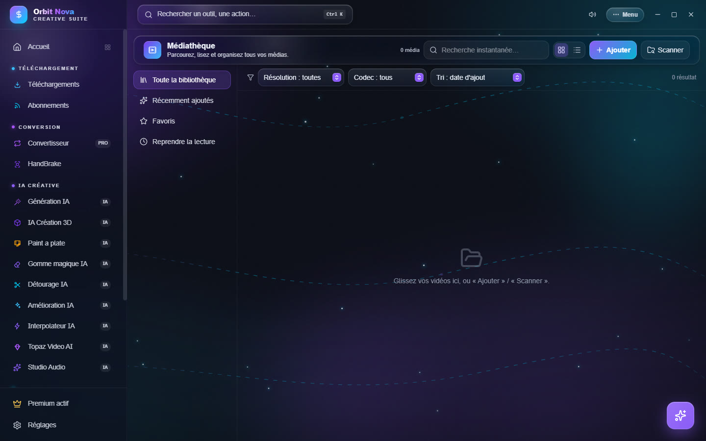

Boîte à outils et médiathèque
Boîte à outils
Plus de 60 petits outils pour les tâches de tous les jours, chacun sur une seule page : choisissez un outil, déposez le fichier, réglez deux ou trois options, c'est fait.


La barre de recherche, en haut, trouve un outil en tapant ce que vous voulez faire (« gif », « compresser », « audio »…).
| Catégorie | Outils |
|---|---|
| Vidéo | Découper, Compresser à une taille, Recadrer (réseaux), Pivoter / Miroir, Changer la vitesse, Inverser, Boomerang, Découper en parties, Vidéo → GIF, GIF → MP4, Images → GIF, Filigrane / logo, Filigrane texte, Fusionner des vidéos, Monteur express, Éditeur timeline, Diaporama, Enregistreur d'écran, Planche-contact, Extraire les images, Vignette (instant), Convertir la vidéo, Fondu entrée/sortie, Débruiter / désentrelacer, Moments forts (auto), Boucler la vidéo, Remplacer l'audio |
| Audio | Extraire l'audio, Normaliser / Fondu, Couper les silences, Fusionner audio, Voix + musique, Éditeur audio, Studio voix IA, Pitch & tempo, Normaliser (LUFS), Volume (gain), Visualiseur audio, Onde sonore (image) |
| Image | Convertir une image, Nettoyer métadonnées, Pivoter / Miroir (image), Recadrer (crop), Bordure / cadre, Ajustements & filtres, Palette de couleurs, Appliquer un LUT, Coloriser (IA), Miniature YouTube, Comparateur |
| Texte et documents | Outils PDF, Incruster sous-titres, Traduire sous-titres, QR Code, OCR (texte d'image) |
| Fichiers | Renommer par lot, Dossier surveillé |
Deux outils méritent un mot de plus :
- Compresser à une taille vise un poids précis : Discord (10 Mo), E-mail (25 Mo), Discord Nitro (50 Mo), Nitro+ (500 Mo) ou une taille personnalisée.
- Dossier surveillé traite automatiquement chaque fichier qui arrive dans un dossier : Vidéos → MP4 (H.264), Vidéos → compresser (poids cible), Vidéos → MP3 ou Images → autre format. Pratique pour un dossier de captures ou d'exports.
Médiathèque
La Médiathèque rassemble vos vidéos dans une bibliothèque, avec un lecteur intégré.


- Ajouter des fichiers, ou Scanner un dossier entier (sous-dossiers compris).
- À gauche : Toute la bibliothèque, Récemment ajoutés, Favoris, Reprendre la lecture (les vidéos commencées reprennent là où vous vous étiez arrêté) et Séries (classées par saison et épisode).
- En haut : Recherche instantanée, filtres Résolution et Codec, tri par date d'ajout, nom, durée, taille ou saison/épisode.
- Cliquez sur une vidéo pour la lire. Le panneau Informations montre les codecs, la taille et la durée.
- Export créatif : Préparer pour un usage (montage, réseaux…) choisit le bon préréglage, puis Convertir.